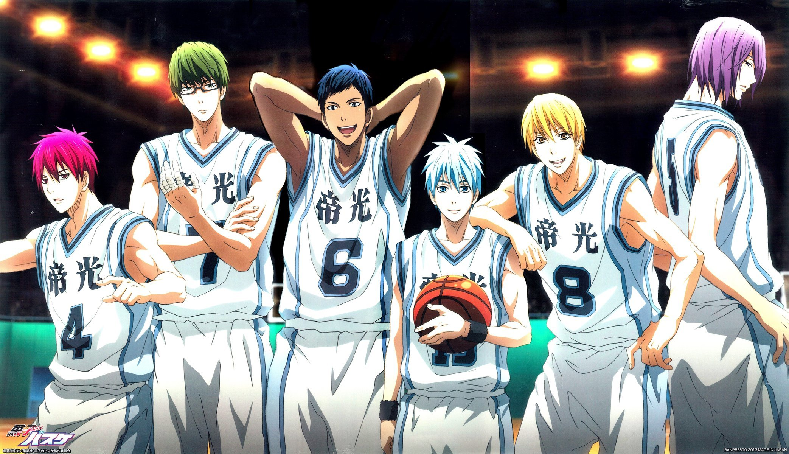

Kuroko no Basuke (яп. 黒子のバスケ, «Баскетбол Куроко») — манга о баскетболе, созданная японским мангакой Тадатоси Фудзимаки (яп. 藤卷忠俊 Фудзимаки Тадатоси). Повествует о приключениях баскетбольной команды, старающейся попасть на национальный чемпионат. В 2012 году стала второй самой продаваемой мангой Японии после One Piece[1], в 2013 году заняла третье место в рейтинге[2].
В средней школе Тэйко была сформирована невероятно сильная баскетбольная команда, одерживавшая множество побед в различных соревнованиях и три года подряд становившаяся победителем на международном чемпионате.
Среди талантливых игроков выделялись пятеро гениев, более известные как «Поколение чудес» (яп. キセキの世代 Кисэки но Сэдай). Но был ещё один игрок, которого признали все пять гениев, так называемый «призрачный, шестой игрок». Однако после выпуска все разошлись по различным старшим школам. Тэцуя Куроко, знаменитый «невидимка», поступает в старшую школу Сэйрин, чья баскетбольная команда существует всего лишь два года. На церемонии поступления Куроко решает вступить в неё, как и талантливый Тайга Кагами, ранее игравший в команде США и снисходительно относящийся к японскому баскетболу.
Команда школы Сэйрин с новоявленными игроками начинает принимать участие в разных состязаниях, чтобы взять титул чемпионов. Их путь осложнён тем, что им предстоит столкнуться с сильнейшими командами других старших школ, в некоторые из которых вступили игроки пятёрки «Поколения Чудес».
Тэцуя Куроко (яп. 黒子 テツヤ Куроко Тэцуя) — первокурсник школы Сэйрин, носящий прозвище «Призрачный игрок». Он один из шестёрки «Поколения чудес», учившейся в средней школе Тэйко. Он маленький, не очень спортивный и абсолютно незаметный для людей, чем часто пользуется в игре, чтобы неожиданно перехватывать мячи и передавать непредсказуемые для противника пасы. Во втором сезоне он осваивает ещё два новых приёма «призрачный бросок» и «исчезающий дриблинг», которые в дальнейшем помогают победить две сильнейшее команды: Академию Тоо и Старшую школу Ёсен.Позиция: лёгкий форвард (возможно, в манге не указано)
Тайга Кагами (яп. 火神大我 Кагами Тайга) — первокурсник школы Сэйрин. Прирождённый баскетболист. Раньше жил в США, где развивал свои навыки благодаря игре в стритбол, у своего учителя Александры Гарсии, но потом вернулся на родину, в Японию, и был сильно разочарован низким уровнем игры. Однако, услышав о «Поколении чудес», загорелся желанием сразиться с ними. Во время сражения с Аомине Дайки вошел в "Поток". Как говорит Аомине Дайки, у каждого свой спускной механизм потока, у Кагами это «желание бороться вместе с командой и Куроко». В зоне может использовать множество приемов: «Прыжок-метеор, данк падающей звезды», а иногда просто «Данк метеор». Во время противостояния Акаши открывает «истинный поток» или «поток, превосходящий поток». В продолжении выясняется, что его приглашают обратно в Америку.Позиция: тяжёлый форвард.
Рико Аида (яп. 相田リコ Аида Рико) — ученица второго года, тренер баскетбольной команды. Причина, по которой ей доверили эту роль, в способности с одного взгляда на тело спортсмена рассмотреть его сильные и слабые стороны, а также перспективы и пределы развития. Научилась она этому благодаря наблюдениям за работой отца, спортивного тренера, много времени проводящего в изучении работы мышц спортсменов и связанных с этим данными.
Дзюмпэй Хюга (яп. 日向 順平 Хю:га Дзюмпэй) — второкурсник и капитан сборной Сэйрин. Специализируется в забрасывании трёхочковых и может прицельно атаковать, даже находясь под жёстким прессингом. Дзюмпэй — опора команды в самых сложных ситуациях. Во втором сезоне научился барьерному броску. А в противостоянии с атакующим защитником старшей школы Ракузан Лео Мибути, освоил «бросок небес».Позиция: атакующий защитник.
Тэппэй Киёси (яп. 木吉 鉄平 Киёси Тэппэй) — основатель баскетбольного клуба Сэйрин, второкурсник, является одним из пяти «Некоронованных королей». Будучи, по слухам, очень способным, он сначала предпочёл быть разыгрывающим защитником, но так как в команде не нашлось подходящих по сложению парней для позиции центрового, Киёси предложил свою кандидатуру. В первом сезоне Киёси не показывают, так как он проходил реабилитацию от прошлогодней травмы колена. Но во втором сезоне вернулся в команду, аргументируя это тем, что он лучше будет играть с командой, чем лежать на больничной койке. После тренировок с отцом тренера он стал ещё сильнее, освоив несколько особых приёмов.Позиция: центровой, разыгрывающий защитник.
Сюн Идзуки (яп. 伊月 俊 Идзуки Сюн) — второкурсник Сейрин, отличающийся спокойствием и собранностью. Также всем известна его страсть к игре слов, но кроме мамы никто её не разделяет, потому что чаще всего шутки Идзуки совсем несмешные и «не в тему». Идзуки очень умен и всегда играет с холодной головой, а эффективность его «Орлиного глаза» настолько велика потому, что он — превосходный стратег. В команде Идзуки самый опытный, так как играет в баскетбол ещё с младшей школы. Владеет особым приёмом «Орлиное копьё».Позиция: разыгрывающий
Ринносукэ Митобэ (яп. 水戸部 凛之助 Митобэ Ринносукэ) — второкурсник Сэйрин, трудяга в команде: и тренируясь, и играя, всегда выкладывается на полную. Ни один из членов команды не слышал его голоса (в 33-й серии (8-я серия 2-го сезона) вместо Митобэ свой класс, номер в команде и имя выкрикивает Коганэи, проходя тем самым посвящение в команду за обоих). Коганэи каким-то образом понимает, о чём думает Ринносукэ, и передаёт это другим. Митобэ — старший сын в многодетной семье, выполняющий там роль няньки (и готовит, и убирает, и присматривает за младшими). Он также стремится к победе, как и остальные члены команды, однако практически никогда не показывает своих эмоций. Более того, согласно Рико, за всю историю существования баскетбольной сборной никто не слышал, чтобы Митобэ разговаривал. Умеет делать слэм-данк, и отлично выполняет бросок крюком.Позиция: центровой
Синдзи Коганэи (яп. 小金井 慎二 Коганэи Синдзи) — второкурсник Сэйрин. Коганэй — достойный игрок-универсал. Его «способность» на самом деле весьма тривиальна: броски из любой точки площадки с варьирующейся точностью. Несмотря на глуповатый вид, Коганей довольно толковый парень и даже входит в число лучших учеников своего класса (хоть и не имеет особенных успехов в каком-нибудь из предметов). Помимо этого невероятным образом способен понимать мысли Митобе, хотя тот никогда не открывает рта.Позиция: лёгкий форвард.
Сатоси Цутида (яп. 土田 聡史 Цутида Сатоси) — ученик первого года. Хорош в подборах. В прошлом году был в основном составе команды, но с приходом Кагами и Куроко теперь чаще сидит на скамейке запасных.
Коки Фурихата (яп. 降旗 光樹 Фурихата Коки) — первокурсник Сэйрин. Его девушка пообещала бросить его, если он не станет лучшим хоть в чём-то, поэтому он вступил в баскетбольный клуб, чтобы стать лучшим игроком. Проявляет трусость.Позиция: разыгрывающий защитник.
Коити Кавахара (яп. 河原 浩一 Кавахара Коити) — первокурсник школы Сэйрин. В детстве никогда не интересовался спортом, но увиденный однажды баскетбольный матч настолько его увлек, что он решил вступить в баскетбольную команду своей школы. Однако из-за отсутствия спортивной подготовки лишь мешал остальным игрокам. В конце концов, после длительной работы над собой Коити сумел развить свои физические способности до нужного уровня и занять место в команде.Позиция: центровой.
Хироси Фукуда (яп. 福田 寛 Фукуда Хироси) — первокурсник школы Сэйрин. В баскетбольный клуб его заманили тем, что так он сможет помочь людям
Рёта Кисэ (яп. 黄瀬 涼太 Кисэ Рё:та) — первокурсник школы Кайдзё. Один из «Поколения чудес». В баскетбол играет лишь со второго года средней школы, однако быстро развился и стал очень сильным игроком. Признаёт, что является слабейшим из пятёрки. Кисэ может скопировать игру любого баскетболиста, только посмотрев на него, однако копировать игроков «Поколения чудес» он может лишь 5 минут. В дальнейшем продолжении манги входит в «поток», но играет он в нём всего 2 минуты.Позиция: лёгкий форвард.
Юкио Касамацу (яп. 笠松 幸男 Касамацу Юкио) — третьекурсник, капитан команды школы Кайдзё. Известен своей вспыльчивостью и применением насилия к участникам своей команды за неосторожные слова или выходки. Особенно достаётся Кисэ. Хорошо играет на гитаре.
Ёситака Морияма (яп. 森山 由孝 Морияма Ёситака) — третьекурсник команды школы Кайдзё. Атакующий защитник со стажем, Морияма — надежный игрок с уникальными бросками. Он не пропускает ни одной юбки и частенько заявляет, что баскетбольная площадка — его арена в борьбе за расположение красотки.
Мицухиро Хаякава (яп. 早川 充洋 Хаякава Мицухиро) — чересчур подвижный и диковатый второкурсник старшей школы Кайдзё. Хаякава специализируется на подборах в нападении и играет на позиции тяжелого форварда. Имеет странную привычку проглатывать некоторые звуки, когда говорит. Поэтому даже члены собственной команды с трудом его понимают.
Кодзи Кобори (яп. 小堀 浩志 Кобори Кодзи) состоит в команде старшей школы Кайдзё. Играет под номером 8. Хорош в защите. Уважает стиль Кисэ.
Гэнта Такэути (яп. 武内源太 Такэути Гэнта) — тренер команды Кайдзё. Строгий, часто злится и начинает кричать на команду, если те не контролируют игру. Страдает излишним весом.
Синтаро Мидорима (яп. 緑間 真太郎 Мидорима Синтаро:) — первокурсник школы Сютоку, один из «Поколения чудес». Его главная способность — 100 % попадание в корзину с любой точки площадки. Он настолько увлечён баскетболом, что всегда следит за ухоженностью своих рук, полирует ногти и носит повязки на пальцах, чтобы не травмировать их. Всегда следует гороскопам.Рост: 195 см, вес: 79 кг. Позиция: атакующий защитник.
Кадзунари Такао (яп. 高尾 和成 Такао Кадзунари) — первокурсник школы Сютоку. Так же, как и Куроко, — специализируется на пасах. Обладает так называемой способностью «Глаз Ястреба», что позволяет следить сразу за всем, что происходит на всей площадке. Поэтому он видит даже Куроко. Кандзи 高 (Така) в его фамилии означает «высокий», но является омофоном слову «ястреб», что является отсылкой к его способностям. Свободное время Такао в основном проводит с Мидоримой.Рост: 176 см, вес: 65 кг. Позиция: Разыгрывающий защитник.
Тайсукэ Оцубо (яп. 大坪 泰介 О:цубо Тайсукэ) — третьекурсник школы Сютоку. Капитан баскетбольной команды. Один из самых сильных и ровно играющих центровых в Японии. По соглашению между ним, тренером и Мидоримой согласен прощать последнему лишь 3 странные или эгоистичные выходки в день.Позиция: Центровой.
Киёси Миядзи (яп. 宮地 清志 Миядзи Киёси) — очень строгий и суровый старшеклассник. В основном он раздражается из-за капризов Мидоримы. Строг не только к другим, но и по отношению к себе. У него есть цель, как у игрока в баскетбол, и он упорно работает для этого. Гнев Миядзи произвёл пугающую репутацию среди первокурсников. Миядзи придерживается безжалостной системы тренировок в команде, которая настолько тяжела, что Такао отметил, что Миядзи, без сомнения, самый пугающий старшеклассник.
Синсукэ Кимура (яп. 木村 信介 Кимура Синсукэ) открыто недолюбливает Мидориму, однако признает его талант.
Масааки Накатани (яп. 中谷 仁亮 Накатани Масааки) — тренер баскетбольной команды Сютоку. Когда Накатани и Кагетора встретились на Зимнем Кубке, оказалось, что они знакомы довольно давно. Доказательством чего стали прозвища, с которыми они друг к другу обращались: Тора и Ма-бой.
Дайки Аоминэ (яп. 青峰 大輝 Аоминэ Дайки) — первокурсник академии Тоо, один из «Поколения чудес». Стал блистать самым первым из пятёрки. На втором году средней школы его силы возросли — он стал быстрее, выносливее, физически мощнее. Его стиль игры нельзя угадать, в игре его нельзя остановить, так как он очень хорошо и постоянно меняет ритм, скорость и движение. Он необычайно быстр и силен, поэтому никто не знает его 100 % потенциала. Так же он может бросать с любой позиции. Это он открыл Кагами зону. Позже научил его самостоятельно входить в зону.Позиция: тяжёлый форвард.
Сацуки Момои (яп. 桃井 さつき Момои Сацуки) — первокурсница школы Тоо, менеджер команды средней школы Тэйко и соответственно игроков «Поколения чудес». Очень наблюдательна и проницательна. Всегда присматривает за Аомине. Весьма активно проявляет интерес к Куроко.Должность: менеджер.
Сёити Имаёси (яп. 今吉 翔一 Имаёси Сё:ити) — третьекурсник школы Тоо, капитан команды. Имаёси — изысканно выражающийся уроженец Осаки, весьма приветливый и добрый на первый взгляд, но за его улыбкой скрывается личность намного более темная. Не демонстрируя никаких особых умений, Имаёси, однако, отлично справляется с ролью капитана, организовывая игру остальных членов сборной Тоо, которая, как известно, состоит из самодостаточных игроков, не привыкших к командной работе.Позиция: разыгрывающий защитник.
Косукэ Вакамацу (яп. 若松 孝輔 Вакамацу Ко:сукэ) — второгодка школы Тоо. После матча с Сэйрин на Зимнем кубке стал капитаном. Будучи игроком весьма внушительной комплекции, Вакамацу большую часть матча играет в защите, с лёгкостью делая подборы и перепасовки. Вакамацу может вывести из себя что и кто угодно, а чаще всего стычки происходят с Аоминэ, которому Косукэ отчасти завидует. Каждая вспышка гнева обычно выливается в разъярённые крики.Позиция: центровой.
Рё Сакураи (яп. 桜井 良 Сакураи Рё:) — первогодка школы Тоо, одаренный атакующий защитник и будущий «король страйков». Его коронный бросок практически невозможно блокировать, потому что стоит Сакураи подобрать мяч, как он тут же, без подготовки, выпрыгивает и забивает. Именно благодаря этому получил от Имаёси свою кличку. Сакураи очень слабохарактерный и чувствительный, часто чувствует себя виноватым за те вещи, которые к нему никак не относятся, и так же часто за них извиняется. Хюга прозвал его «Извиняющейся Поганкой».
Ёсинори Суса (яп. 諏佐 佳典 Суса Ёсинори) — третьегодка команды школы Тоо. Является игроком регулярного состава, однако настоящие способности не были раскрыты.Позиция: лёгкий форвард.
Кацунори Харасава (яп. 原澤 克徳 Харасава Кацунори) — тренер старшей школы Тоо. Часто можно увидеть, как он потирает прядь волос, а также в задумчивом состоянии.
Макото Ханамия (яп. 花宮 真 Ханамия Макото) — второкурсник школы Кирисаки Дайити. Капитан и тренер команды. Является одним из пяти «Некоронованных Королей», то есть относится к поколению талантливых баскетболистов, на год старше «Поколения чудес», которые и составляли им конкуренцию в средней школе. Известен своей нечестной игрой.Позиция: Разыгрывающий защитник.
Кэнтаро Сэто (яп. 瀬戸 健太郎 Сэто Кэнтаро:) — ученик школы Кирисаки Дайити. Очень умный, его IQ равен 160. В связке с Ханамией вычисляет передачи противников, от чего перехватывать мячи становится легче. Может спать на скамье запасных во время матча своей же команды, но если потребуется его участие, тут же просыпается. Играет на позиции центрового.
Кадзуя Хара (яп. 原 一哉 Хара Кадзуя) — второкурсник школы Кирисаки Дайити. Глаза скрыты за очень длинной челкой. Непременно жуёт жвачку.
Хироси Ямадзаки (яп. 山崎 弘 Ямадзаки Хироси) — атакующий защитник Кирисаки Дайити.
Кодзиро Фурухаси (яп. 古橋 康次郎 Фурухаси Ко:дзиро:) — лёгкий форвард Кирисаки Дайити.
Ацуси Мурасакибара (яп. 紫原 敦 Мурасакибара Ацуси) — первокурсник школы Ёсэн, один из «Поколения чудес». Самый высокий в «Поколении чудес» (его рост 208 см). Вне игры он в основном ведёт себя, как ребёнок (что нередко ставит окружающих в тупик), меланхоличен, любит сладкое, а когда начинает играть, то превращается в человека с устрашающим взглядом — «маньяка». Один из немногих, кто может войти в «поток». В продолжении выясняется, что он не использовал до этого всю свою силу.Позиция: Центровой.
Тацуя Химуро (яп. 氷室 辰也 Химуро Тацуя) — второкурсник школы Ёсен. У него длинные чёрные волосы, чёлка скрывает левый глаз, под правым глазом родинка. В детстве жил в Америке, где научился баскетболу и полюбил его. Именно он увлек Кагами в эту игру. Стал для него «старшим братом». Но в одном матче Кагами поддался, что рассердило Химуро, и тот сказал, что в следующем матче они будут играть за кольца, которые символизировали их дружбу. Не имея такого таланта в баскетболе, как у Кагами или Аоминэ, он развил свои навыки до предела, однако играть на равных с членами «Поколения чудес» он все равно никогда не сможет.Атакующий защитник. Позиция: Лёгкий форвард.
Кэнъити Окамура (яп. 岡村 建一 Окамура Кэнъити) — третьекурсник школы Ёсэн, капитан баскетбольной команды. Мечтает встречаться с девушкой, но никто не хочет с ним встречаться.
Кэнсукэ Фукуи (яп. 福井 健介 Фукуи Кэнсукэ) — третьекурсник школы Ёсэн, вице-капитан баскетбольного клуба. Друг Окамуры.
Вэй Лю (яп. 劉偉 Лю Вэй) — второкурсник школы Ёсэн, ученик по обмену. Хорошо берёт отскоки.
Масако Араки (яп. 荒木 雅子 Араки Масако) — является тренером Ёсэн. Была успешной баскетболисткой, состояла в национальной японской женской баскетбольной команде. Школьную команду отчитывает с помощью бамбукового меча.
Сэйдзюро Акаси (яп. 赤司 征十郎 Акаси Сэйдзю:ро:) — первокурсник школы Ракудзан, один из «Поколения чудес», в которой был капитаном. Именно он провозгласил девиз, которому следовала пятёрка — «Победа — это всё!». Отличительная черта — гетерохромия глаз (правый красный, левый жёлтый), хотя в средней школе (до пробуждения его второй личности) оба были красными. В связи с тем, что у Акаси две личности, он имеет несколько способностей. Личность с разными глазами имеет способность «Глаз Императора» — она позволяет предсказывать будущие действия игрока по его дыханию, движению мышц, направлению взгляда. Личность с двумя красными глазами способна давать «фальшивую зону» всей команде, играя в командную игру, поднимает их игровые навыки на 100 %. Также Акаси может заставить своим дриблингом упасть любого защитника. Может войти в «Поток». В продолжении личности объединяются, из-за чего расширяются "Глаза Императора".Позиция: Разыгрывающий.
Эйкити Нэбуя (яп. 根武谷 永吉 Нэбуя Эйкити) — второкурсник школы Ракудзан, мускулистого телосложения, из-за чего выглядит старше, чем на самом деле. Может съесть больше, чем Кагами, так как получает силу от еды. Является одним из «Некоронованных королей», известен как «Геркулесова мощь».Центровой.
Тайсукэ Оцубо (яп. 大坪 泰介 О:цубо Тайсукэ) — третьекурсник школы Сютоку. Капитан баскетбольной команды. Один из самых сильных и ровно играющих центровых в Японии. По соглашению между ним, тренером и Мидоримой согласен прощать последнему лишь 3 странные или эгоистичные выходки в день.Позиция: Центровой.
Лео Мибути (яп. 実渕 玲央 Мибути Рэо) — второкурсник школы Ракудзан. Довольно встревоженный. Мибути любит порядок и легко раздражается, когда кто-то валяет дурака и странно себя ведёт. Он критикует и исправляет их, но не всегда удачно. Несмотря на это, он может быть миролюбивым и расслабленным. Не любит шум. Является одним из «Некоронованных Королей», известен как «Якша» своими тремя знаменитыми бросками: небо, земля и пустота.Атакующий защитник.
Котаро Хаяма (яп. 葉山 小太郎 Хаяма Котаро:) — второкурсник школы Ракудзан. В средней школе был сильным и талантливым игроком, пока не был затмен Поколением Чудес. Талантлив в дрибблинге и ведение мяча. Является одним из «Некоронованных Королей», по прозвищу «Райдзю» или "громовой зверь " из-за своей молниеносной скорости.Лёгкий форвард.
Тихиро Маюдзуми (яп. 黛 千尋 Маюдзуми Тихиро) — третьекурсник школы Ракудзан. Обладает такой же способностью, как и Куроко, но он «усовершенствованная версия шестого призрачного игрока».